Evrişim (Convolution)
Evrişim iki fonksiyon $f,g$ üzerinde tanımlı bir operasyondur, bu operasyon iki fonksiyondan üçüncü bir fonksiyon yaratır. Operasyon bir entegral üzerinden tanımlıdır, $g$'nin aynı görüntüsü / ters çevrilmiş halinin alınıp, soldan (negatif sonsuzluk) sağa doğru kaydırılırken $f$ ile üst üste gelen bölgenin alanını her $t$ için alınması durumudur, bu açıdan evrişim bir tür ağırlıklı ortalama olarak görülebilir, $f$'in ağırlıklı ortalaması $g$ üzerinden alınmaktadır. Matematiksel olarak,
$$f * g \equiv \int_{-\infty}^{\infty} f(\tau)g(t-\tau) \mathrm{d}\tau $$
Evrişim sırabağımsızdır, yani $f * g = g * f$, o zaman
$$f * g \equiv \int_{-\infty}^{\infty} f(t-\tau)g(\tau) \mathrm{d}\tau $$
ifadesi de doğrudur. Örnek $f,g$ üzerine görelim,
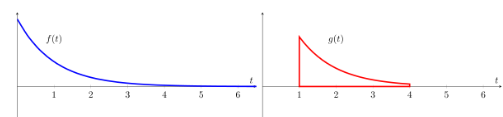
Her iki fonksiyonu bir geçici değişken $\tau$ üzerinden tanımlayabiliriz, Sonra $g$'nin ayna görüntüsünü alırız, $g(\tau) \to g(-\tau)$
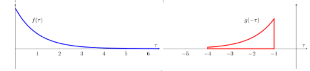
Şimdi bir zaman kaydırma faktörü $t$ ekleyebiliriz, bir $g(t-\tau)$ elde ederiz, bunun etkisi her $t$ için $g$'yi istediğimiz noktaya kaydırabilmektir. Bunu yaparken, mesela negatif sonsuzluktan pozitif sonsuzluğa kaydırırken, her $t$ anında alınan entegralin sonuçları bize evrişimi verir. Dikkat, kaydırma entegralin sonucu değil, sadece "her $t$ için" vurgusu amacıyla bu kaydırma görüntüsü veriliyor, her $t$ noktasında, kaydırma nereye olursa olsun, $-\infty,\infty$ arasında entegral alınmaktadır.
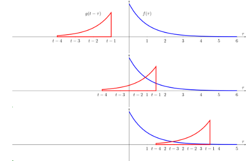
Ayrıksal olarak,
$$ (f * g) [n] \equiv \sum_{m=-\infty}^{\infty} f[m] g[n-m] $$
Farklı fonksiyonlar üzerinde görelim, mesela kare fonksiyonunu kendisiyle evrişimi, $f$ mavi, $g$ kırmızı, sarı bölgeler çakışma olan yerler, $g$'nin her $t$ için evrişim entegral sonucu ise siyah çizgi ile gösteriliyor,
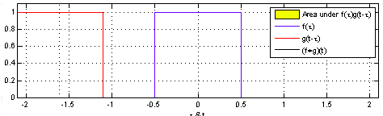 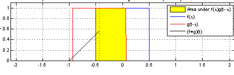
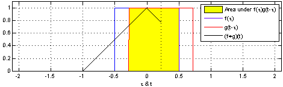 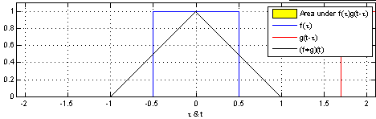
Şimdi $f$ kavisli bir fonksiyon, $g$ hala kare,
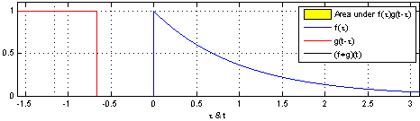 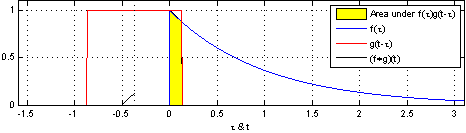
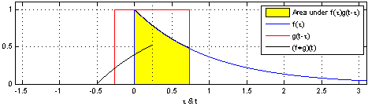 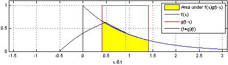
Evrişim ile çapraz korelasyon (cross-correlation) arasında bağlantılar var, $t-\tau$ yerine $t+\tau$ kullanılırsa çapraz korelasyon elde ediliyor.
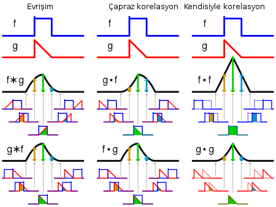
Örnek
import scipy.signal
f = [1,2,3,4,5,6]
g = [5,4,3,2,1]
print scipy.signal.convolve(a,b)
[ 5 14 26 40 55 70 50 32 17 6]
$X+Y$ Dağılımı
Çoğu zaman $X,Y$'in bağımsız olduğu durumda bu rasgele değişkenlerin toplamının dağılımını hesaplamak gerekir [2, sf 56]. Kümülatif fonksiyon $F$ ile
$$ F_{Z+Y} = P(X+Y \le a) $$
$$ = \int \int_{x+y \le a}^{} f(x)g(y) \mathrm{d} x \mathrm{d} y $$
$f(x)g(y)$ kullanabildik çünkü $X,Y$ bağımsız. Alt sınırda bir değişiklik yapalım, $x+y \le a$, o zaman $x \le a-y$. Demek ki
$$ = \int_{-\infty}^{\infty} \int_{-\infty}^{a-y} f(x)g(y) \mathrm{d} x \mathrm{d} y $$
Entegralleri gruplayabiliriz,
$$ = \int_{-\infty}^{\infty} \bigg[ \int_{-\infty}^{a-y} f(x) \mathrm{d} x \bigg] g(y) \mathrm{d} y $$
$$ = \int_{-\infty}^{\infty} F_X(a-y) g(y) \mathrm{d} y $$
Yoğunluğu almak için kümülatif fonksiyonun türevini alırsak,
$$ f_{X+Y}(a) = \frac{d}{da} \int_{-\infty}^{\infty} F_X(a-y) g(y) \mathrm{d} y $$
$$ = \int_{-\infty}^{\infty} \frac{d}{da} F_X(a-y) g(y) \mathrm{d} y $$
$$ = \int_{-\infty}^{\infty} f_X(a-y) g(y) \mathrm{d} y $$
Üstteki ifade bir evrişim operasyonu! Yani iki bağımsız rasgele değişkenin toplamının yoğunluğu, değişkenlerin yoğunluklarının evrişimine eşittir!
[1, sf. 365]'de ayrıksal olarak üstteki hesaba değiniliyor, elde iki zar var, zarın her yüzünün gelme ihtimali $p_i=1/6$, bu iki zarın mümkün her türlü toplamının hesabı bir evrişim, $p * p$,
import scipy.signal
d = 1/6. * np.array([1.0,1.0,1.0,1.0,1.0,1.0])
print scipy.signal.convolve(d,d)
print scipy.signal.convolve(d,d) * 36.
[ 0.02777778 0.05555556 0.08333333 0.11111111 0.13888889 0.16666667
0.13888889 0.11111111 0.08333333 0.05555556 0.02777778]
[ 1. 2. 3. 4. 5. 6. 5. 4. 3. 2. 1.]
Sonuca göre toplam 12 gelme ihtimali 1/36 (en baştaki), 11 gelme ihtimali 2/36, vs.
Ek bilgiler için bkz [4] notları.
Kaynaklar
[1] Strang, Computational Science and Engineering
[2] Wikipedia, Convolution, https://en.wikipedia.org/wiki/Convolution
[3] Ross, Introduction to Probability Models 10th Edition
[4] Bayramlı, Diferansiyel Denklemler, Ders 21